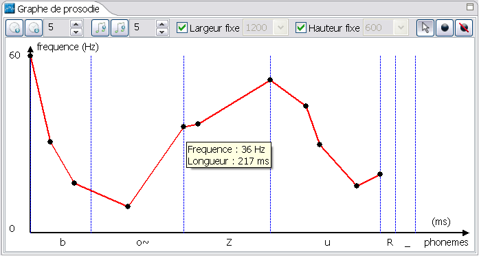

)
)Vous pouvez avoir des information sur le point en positionnant le curseur de la souris dessus (en mode selection )

Vous pouvez Déplacer vers le haut ou vers le bas (modification de la fréquence) les points des phonèmes avec l'outil de sélection
Vous pouvez également ajouter des points (7 points maximum par phonème) avec l'outil
Vous pouvez enfin retirer des points des phonèmes avec l'outil